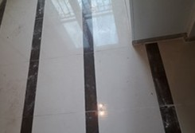
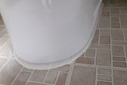

줄눈시공의 효과
- 물때나 곰팡이의 오염으로부터 해방되며, 파손이나 부식의 걱정이 없습니다.
- 새 건물 입주 시 줄눈시공을 진행하면 반영구적인 화장실, 베란다 타일을 유지할 수 있습니다.
- 위생적이고 청결한 느낌의 공간을 유지시켜 새롭게 인테리어한 효과를 전달합니다.
작업 사진


줄눈시공의 작업절차
- STEP 01고객상담진행
- STEP 02타일청소
- STEP 03백시멘트 제거
- STEP 04세정작업
- STEP 05줄눈시공작업
- STEP 06줄눈건조작업
- STEP 07잔여물 제거
- STEP 08타일 전체 코팅
- STEP 09점검 및 마무리